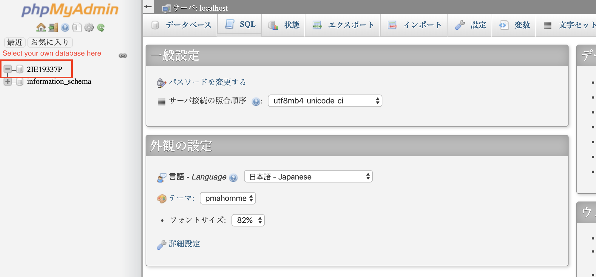

How to use phpMyAdmin phpMyAdminの使い方
Use the GUI management interface for MySQL DBMS
MySQL DBMSのGUI管理インターフェイスを使用する
Login ログイン
You can either enter URL http://133.5.19.187/phpMyAdmin directly or click on "Database Admin Page (MySQL)" on theCourse Material page as shown below.
URL http://133.5.19.187/phpMyAdmin を直接入力するか、以下に示すように、コース資料ページの[Database Admin Page (MySQL)]をクリックします。
The username is your student ID with all the letters in UPPER case
ユーザー名は、すべての文字が大文字の学籍番号です。
The default password we've created for you is: bdp2019w. You can change it later by yourself.
作成したデフォルトのパスワードは bdp2019w です。 後で自分で変更できます。
You can also select your favorite language, for this instruction, we'll use the Japanese interface.
お気に入りの言語を選択することできますかが、この使い方では、日本語のインターフェイスを使用します。
Use GUI to query the database GUIを使用してデータベースを照会する
Interface basics
インタフェースの基礎
After you log in to your account, a database with your student ID will show up on the left.
アカウントにログインすると、左側に学籍番号と同じのデータベースが表示されます。
Select it will give an overview of your database, since this is a new database, no table is available.
これを選択すると、データベースの概要が表示されます。これは新しいデータベースなので、テーブルがありません。
We will teach you how to create a table as well as how to insert some data in the next section.
次のセクションでは、テーブルの作成方法とデータの挿入方法を説明します。
Create the table and insert some data
テーブルを作成し、データを挿入します
Click on the SQL button on the right panel, and it will take you to the SQL interface.
右側のパネルの[SQL]ボタンをクリックすると、SQLインターフェイスに移動します。
Here, we input our query and hit the execute button.
ここで、クエリを入力し、実行ボタンを押します。
CREATE TABLE sample(
NO INTEGER PRIMARY KEY,
NAME VARCHAR(50),
price INTEGER
);
INSERT INTO sample VALUES(1001,'orange',50);
INSERT INTO sample VALUES(1002,'apple',90);
INSERT INTO sample VALUES(1003,'banana',50);If you see this screen, this means that you've successfully created the table and inserted the data.
この画面が表示された場合、これはテーブルが正常に作成され、データが挿入されたことを意味します。
Data selection データ選択
Next, let's confirm that we have data injected into the database.
次に、データベースにデータがあることを確認しましょう。
Select the table "sample" from left, and as previous, click on the SQL button on the right panel.
左から「sample」テーブルを選択し、前と同じように、右パネルの[SQL]ボタンをクリックします。
Let's input the select query into the text box and execute it as we've done before.
選択クエリを入力し、前と同じように実行します。
SELECT * from `sample`;
If all goes well, you should have the screen shown below:
すべてうまくいけば、次の画面が表示されます。
Conclusion and future steps
まとめ
Congratulations! You've now learned the basics of dealing with a database. We recommend you to explore other options and queries to get familiar with it.
おめでとうございます！ これで、データベースを扱うための基本を学びました。 他のオプションやクエリを調べて、それをやってみるをお勧めします。
Also, since the databases are primarily accessed by programs, we recommend you go and check the 3rd week's materials. There, we will teach you how to do the basic query in python.
また、データベースには主にプログラムからアクセスするため、3週目の資料を確認することをお勧めします。 そこで、Pythonで基本的なクエリを実行する方法を説明します。